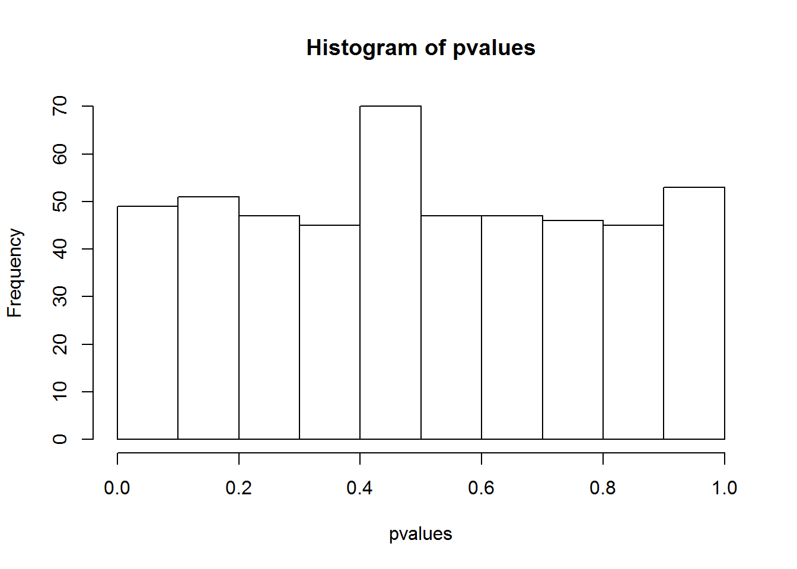
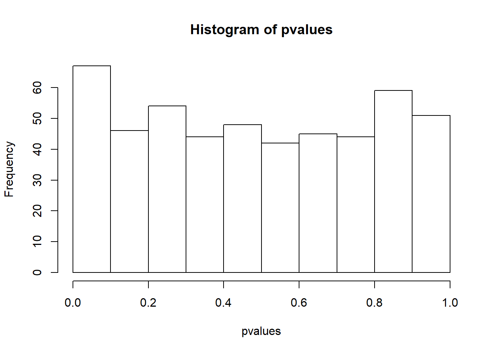

Chapter 6 Data structures
R data types and basic expressions1 : Common data structures in R include scalars, vectors, factors, matrices, data frames, and lists. These data structures can contain one or more individual data elements of several types, namely numeric (2.5), character (“Go Jacks”), or logical (TRUE or FALSE).
6.1 Basic concepts
6.1.1 Expressions
Type anything at the prompt, and R will evaluate it and print the answer.
1 + 1## [1] 2There’s your result, 2. It’s printed on the console right after your entry.
Type the string “Go Jacks”. (Don’t forget the quotes!)
"Go Jacks"## [1] "Go Jacks"6.1.2 Logical Values
Some expressions return a “logical value”: TRUE or FALSE. (Many programming languages refer to these as “boolean” values.) Let’s try typing an expression that gives us a logical value:
3 < 4## [1] TRUEAnd another logical value (note that you need a double-equals sign to check whether two values are equal - a single-equals sign won’t work):
2 + 2 == 5## [1] FALSET and F are shorthand for TRUE and FALSE. Try this:
T == TRUE## [1] TRUE6.1.3 Variables
As in other programming languages, you can store a value into a variable to access it later. Type x = 42 to store a value in x. x is a scalar, with only one data element.
x = 42You can also use the following. This is a conventional, safer way to assign values.
x <- 42x can now be used in expressions in place of the original result. Try dividing x by 2 (/ is the division operator), and other calculations.
x / 2## [1] 21log(x)## [1] 3.73767x^2## [1] 1764sqrt(x)## [1] 6.480741x>1## [1] TRUEYou can re-assign any value to a variable at any time. Try assigning “Go Jacks!” to x.
x <- "Go Jacks!"You can print the value of a variable at any time just by typing its name in the console. Try printing the current value of x.
x## [1] "Go Jacks!"Now try assigning the TRUE logical value to x.
x <- TRUEYou can store multiple values in a variable or object. That is called a vector, which is explained below. An object can also contain a table with rows and columns, like an Excel spreadsheet, as a matrix, or data frame.
6.1.4 Functions
You call a function by typing its name, followed by one or more arguments to that function in parenthesis. Most of your R commands are functional calls. Let’s try using the sum function, to add up a few numbers. Enter:
sum(1, 3, 5)## [1] 9Some arguments have names. For example, to repeat a value 3 times, you would call the rep function and provide its times argument:
rep("Yo ho!", times = 3)## [1] "Yo ho!" "Yo ho!" "Yo ho!"6.1.5 Looking for Help and Example Code
? sum A web page will pope up. This is the official help information for this function. At the bottom of the page is some example code. The quickest way to learn an R function is to run the example codes and see the input and output. You can easily copy, paste, and twist the example code to do your analysis.
example() brings up examples of usage for the given function. Try displaying examples for the min function:
example(min)##
## min> require(stats); require(graphics)
##
## min> min(5:1, pi) #-> one number
## [1] 1
##
## min> pmin(5:1, pi) #-> 5 numbers
## [1] 3.141593 3.141593 3.000000 2.000000 1.000000
##
## min> x <- sort(rnorm(100)); cH <- 1.35
##
## min> pmin(cH, quantile(x)) # no names
## [1] -2.71727892 -0.75458932 -0.02968613 0.70795567 1.35000000
##
## min> pmin(quantile(x), cH) # has names
## 0% 25% 50% 75% 100%
## -2.71727892 -0.75458932 -0.02968613 0.70795567 1.35000000
##
## min> plot(x, pmin(cH, pmax(-cH, x)), type = "b", main = "Huber's function")##
## min> cut01 <- function(x) pmax(pmin(x, 1), 0)
##
## min> curve( x^2 - 1/4, -1.4, 1.5, col = 2)##
## min> curve(cut01(x^2 - 1/4), col = "blue", add = TRUE, n = 500)
##
## min> ## pmax(), pmin() preserve attributes of *first* argument
## min> D <- diag(x = (3:1)/4) ; n0 <- numeric()
##
## min> stopifnot(identical(D, cut01(D) ),
## min+ identical(n0, cut01(n0)),
## min+ identical(n0, cut01(NULL)),
## min+ identical(n0, pmax(3:1, n0, 2)),
## min+ identical(n0, pmax(n0, 4)))min(5:1, pi) # -> one number## [1] 1Example commands and plots will show up automatically by typing Return in RStudio. In R, you need to click on the plots.
example(boxplot) # bring example of boxplot
I found a lot of help information about R through Google. Google tolerate typos, grammar errors, and different notations. Also, most (99 %) of your questions have been asked and answered on various forums. Many R gurus answered a ton of questions on web sites like** stackoverflow.com**, with example codes! I also use Google as a reference.
It is important to add comments to your code. Everything after the “#” will be ignored by R when running. We often recycle and repurpose our codes.
max(1, 3, 5) # return the maximum value of a vector## [1] 56.2 Data structures
6.2.1 Vectors
A vector is an object that holds a sequence of values of the same type. A vector’s values can be numbers, strings, logical values, or any other type, as long as they’re all the same type. They can come from a column of a data frame. if we have a vector x:
x <- c(5, 2, 22, 11, 5)Here c is for combine, do not use it as variable name. It is as special as you!
Vectors cannot hold values with different modes (types). Try mixing modes and see what happens:
c(1, TRUE, "three")## [1] "1" "TRUE" "three"All the values were converted to a single mode (characters) so that the vector can hold them all. To hold diverse types of values, you will need a list, which is explained later in this chapter.
If you need a vector with a sequence of numbers you can create it with start:end notation. This is often used in loops and operations on the indices of vectors etc. Let’s make a vector with values from 5 through 9:
5:9## [1] 5 6 7 8 9A more versatile way to make sequences is to call the seq function. Let’s do the same thing with seq:
seq(5, 9)## [1] 5 6 7 8 9seq also allows you to use increments other than 1. Try it with steps of 0.5:
seq(5, 9, .5)## [1] 5.0 5.5 6.0 6.5 7.0 7.5 8.0 8.5 9.06.2.1.1 Commands about vector
Next we will try those commands about vector. First let’s find out what is the 4th element of our vector x, or the elements from 2 to 4.
x[4]## [1] 11x[2:4]## [1] 2 22 11If you define the vector as y,
y <- x[2:4]No result is returned but you “captured” the result in a new vector, which holds 3 numbers. You can type y and hit return to see the results. Or do some computing with it.
y <- x[2:4]; y## [1] 2 22 11This does exactly the same in one line. Semicolon separates multiple commands.
Now if we want to know the number of elements in the vector
length(x)## [1] 5It’s also easy to know about the maximum, minimum, sum, mean and median individually or together. We can get standard deviation too.
max(x)## [1] 22min(x)## [1] 2sum(x)## [1] 45mean(x)## [1] 9median(x)## [1] 5summary(x)## Min. 1st Qu. Median Mean 3rd Qu. Max.
## 2 5 5 9 11 22sd(x)## [1] 7.968689rank() function ranks the elements. Ties are shown as the average of these ranks. While sort() will sort from the smallest to the biggest, decreasing = T will make it sort form the biggest to the smallest.
rank(x)## [1] 2.5 1.0 5.0 4.0 2.5sort(x)## [1] 2 5 5 11 22sort(x, decreasing = T)## [1] 22 11 5 5 2diff() lag and iterate the differences of vector x.
diff(x)## [1] -3 20 -11 -6rev() will reverse the position of the elements in the vector.
rev(x)## [1] 5 11 22 2 5Operations are performed element by element. Same for log, sqrt, x^2, etc. They return vectors too.
log(x)## [1] 1.6094379 0.6931472 3.0910425 2.3978953 1.6094379sqrt(x)## [1] 2.236068 1.414214 4.690416 3.316625 2.236068x^2## [1] 25 4 484 121 252*x + 1## [1] 11 5 45 23 11If we don’t want the second element and save it as y:
y <- x[-2]
y## [1] 5 22 11 5On the contrary, we can also add a new element to the end. These two commands get the same result.
c(x, 7)## [1] 5 2 22 11 5 7append(x, 7)## [1] 5 2 22 11 5 7Sometimes we are interested in unique elements:
unique(x)## [1] 5 2 22 11And the frequencies of the unique elements:
table(x)## x
## 2 5 11 22
## 1 2 1 1If we are interested in the index of the maximum or minimum:
which.max(x)## [1] 3which.min(x)## [1] 2Or we need to look for the location of a special value:
which(x == 11)## [1] 4We can randomly chose some elements from the vector.
sample(x, 2)## [1] 11 2Elements in the vector can have names. Type “x” in the command window to see the difference.
names(x) <- c("x", "y", "z", "Amy", "John")
x## x y z Amy John
## 5 2 22 11 5Now we can refer to the elements by their names.
x["Amy"]## Amy
## 11If we have two vectors and try to compare them with each other:
y <- c(5, 11, 8)
z <- match(y, x)
z## [1] 1 4 NAmatch() returns the locations in 2nd vector. NA means missing, not found. To check if NA is in a vector, we use the function is.na( ). Note that the result is a vector holding logical values. Do we have missing value in our vector?
is.na(x)## x y z Amy John
## FALSE FALSE FALSE FALSE FALSEis.na(z)## [1] FALSE FALSE TRUESometimes, when working with sample data, a given value isn’t available. But it’s not a good idea to just throw those values out. R has a value that explicitly indicates a sample was not available: NA. Many functions that work with vectors treat this value specially. For our z vector, try to get the sum of its values, and see what the result is:
sum(z)## [1] NAThe sum is considered “not available” by default because one of the vector’s values was NA. This is the responsible thing to do; R won’t just blithely add up the numbers without warning you about the incomplete data. We can explicitly tell sum (and many other functions) to remove NA values before they do their calculations, however.
Bring up documentation for the sum function:
? sumsum package:base
R Documentation …
As you see in the documentation, sum can take an optional named argument, na.rm. It’s set to FALSE by default, but if you set it to TRUE, all NA arguments will be removed from the vector before the calculation is performed.
Try calling sum again, with na.rm parameter set to TRUE:
sum(z, na.rm = TRUE)## [1] 56.2.1.2 Scatter Plots of two vectors
The plot function takes two vectors, one for X values and one for Y values, and draws a graph of them. Let’s draw a graph showing the relationship of numbers and their sines.
x <- seq(1, 20, 0.1)
y <- sqrt(x)Then simply call plot with your two vectors:
plot(x, y)Great job! Notice on the graph that values from the first argument (x) are used for the horizontal axis, and values from the second (y) for the vertical.
6.2.1.3 Fish example of vector
Once upon a time, Tom, Jerry, and Mickey went fishing and they caught 7, 3, and 9 fishes, respectively. This information can be stored in a vector, like this:
c(7, 3, 9)## [1] 7 3 9The c() function (c is short for Combine) creates a new vector by combining a set of values. If we want to continue to use the vector, we hold it in an object and give it a name:
fishes <- c(7, 3, 9)
fishes## [1] 7 3 9fishes is a vector with 3 data elements. There are many functions that operate on vectors. You can plot the vector:
barplot(fishes) # see figure 6.1AYou can compute the total:
sum(fishes)## [1] 19We can access the individual elements by indices:
fishes[3]## [1] 9Jerry protested that the ¼ inch long fish he caught and released per fishing rules was not counted properly. We can change the values in the 2nd element directly by:
fishes[2] <- fishes[2] + 1 On the left side, we take the current value of the 2nd element, which is 3, and add an 1 to it. The result (4) is assigned back to the 2nd element itself. As a result, the 2nd element is increased by 1. This is not an math equation, but a value assignment operation. More rigorously, we should write this as fishes[2] <- fishes[2] + 1
We can also directly overwrite the values.
fishes[2] <- 4
fishes## [1] 7 4 9They started a camp fire, and each ate 1 fish for dinner. Now the fishes left:
fishes2 <- fishes - 1
fishes2## [1] 6 3 8Most arithmetic operations work just as well on vectors as they do on single values. R subtracts 1 from each individual element. If you add a scalar (a single value) to a vector, the scalar will be added to each value in the vector, returning a new vector with the results.
While they are sleeping in their camping site, a fox stole 3 fishes from Jerry’s bucket, and 4 fishes from Mickey’s bucket. How many left?
stolen <- c(0, 3, 4) # a new vector
fishes2 - stolen## [1] 6 0 4If you add or subtract two vectors of the same length, R will take the corresponding values from each vector and add or subtract them. The 0 is necessary to keep the vector length the same.
Proud of himself, Mickey wanted to make a 5ft x 5ft poster to show he is the best fisherman. Knowing that a picture worthes a thousand words, he learned R and started plotting. He absolutely needs his names on the plots. The data elements in a vector can have names or labels.
names(fishes) <- c("Tom", "Jerry", "Mickey")The right side is a vector, holding 3 character values. These values are assigned as the names of the 3 elements in the fishes vector. names is a built-in function. Our vector looks like:
fishes## Tom Jerry Mickey
## 7 4 9barplot(fishes) # see figure 6.1B
Figure 6.1: Simple Bar plot
Assigning names for a vector also enables us to use labels to access each element. Try getting the value for Jerry:
fishes["Jerry"]## Jerry
## 4Tom proposes that their goal for next fishing trip is to double their catches.
2 * fishes## Tom Jerry Mickey
## 14 8 18Hopelessly optimistic, Jerry proposed that next time each should “square” their catches, so that together they may feed the entire school.
sum(fishes ^ 2)## [1] 146Note that two operations are nested. You can obviously do it in two steps.
6.2.2 Lists
Vectors contain a set of values. But one vector can only contain one type of values, numbers, characters, or logical values. A list can store a series of objects of different types.
y <- list(height = 5,name = "John Doe", BP = c(100, 77)) # a list with 3 componentsIf we want one of the items in its original form, we can extract it with double square brackets:
y[[3]]## [1] 100 77Alternatively, we can refer to the objects by using the dollar sign and the name of the object:
y$BP## [1] 100 77Many R functions, such as t.test(), returns results as a list, which contain a series of components, such as a P value, a vector of residuals or coefficients, and even a matrix of data. A list is the natural way to represent this sort of thing as one big object that could be parsed.
result <- t.test(rnorm(100), rnorm(100)) # rnorm(100): 100 random number
result # A list holds all results of t-test##
## Welch Two Sample t-test
##
## data: rnorm(100) and rnorm(100)
## t = -0.4394, df = 197.33, p-value = 0.6609
## alternative hypothesis: true difference in means is not equal to 0
## 95 percent confidence interval:
## -0.3339632 0.2122578
## sample estimates:
## mean of x mean of y
## -0.03163374 0.02921894result$p.value # This retrieves just the P value## [1] 0.6608517result$estimate # this returns a vector containing two values## mean of x mean of y
## -0.03163374 0.02921894The help page of t.test contains information about what types of values are returned and their names.
? t.testValue
A list with class “htest” containing the following components:
statistic: …
p.value: the p-value for the test.
estimate: the estimated mean or difference in means depending on whether it was a one-sample test or a two-sample test.
With this in mind, let’s run a simulation using a loop. What we want to do is to generate two sets of 100 random numbers from the standard normal distribution with zero mean and unit standard deviation, and perform t-test and get the P value. By repeating this process 500 times, we want to see the distribution of P values and count how many times we get significant result with P < 0.05.
pvalues <- rep(1, 500) # define a vector containing 500 numbers, all equal to 1.
for (i in 1:500) { # Loop: The values of i takes values from 1,2,3, …, 500
result = t.test(rnorm(100), rnorm(100))
pvalues[i] = result$p.value # P values are stored in the i-th element in the vector
}
hist(pvalues) # define
summary(pvalues) ## Min. 1st Qu. Median Mean 3rd Qu. Max.
## 0.0008133 0.2478585 0.4869624 0.4968841 0.7470706 0.9989726sum(pvalues < 0.05) # Count how many P values are less than 0.05. ## [1] 286.2.3 Strings and string vectors
We encounter text data sometimes. Plus, we also have row and column names. We can easily manipulate these string objects.
Define a string x: “R is cool”
x <- "R is cool"If we want to know the number of character of the string:
nchar(x)## [1] 9We can concatenate strings. By default a space is added.
paste(x, "!!")## [1] "R is cool !!"If we want to extract sub-string from position of 6 and 9:
substr(x, 6, 9)## [1] "cool"Split string into a list which is separated by space:
strsplit(x, " ")## [[1]]
## [1] "R" "is" "cool"Find pattern “R” and replace with “Tim”:
gsub("R", "Tim", x)## [1] "Tim is cool"Or remove space followed by anything:
gsub(" .*", "", x)## [1] "R"We can search for pattern like “is” in the string.
grepl("is", x)## [1] TRUEWe can also convert the whole string into low case or upper case by “tolower” or “toupper” function.
tolower(x)## [1] "r is cool"toupper(x)## [1] "R IS COOL"A string vector can hold many strings. This can be a column of names or IDs in a table. First let’s define a character vector x <- c(“ab”, “cde”, “d”, “ab”).
x <- c("ab", "cde", "d", "ab") We can use all commands about vector for our string vector, such as 2nd element in vector:
x[2]## [1] "cde"Number of strings in the vector:
length(x)## [1] 4Unique elements:
unique(x)## [1] "ab" "cde" "d"Now we are interested in the duplicated element in the string vector. Is there any duplicated element in the vector?
duplicated(x)## [1] FALSE FALSE FALSE TRUEThe last element is duplicated. F denotes FALSE, and T for TRUE. If we want to know the number of characters in each of the element:
nchar(x)## [1] 2 3 1 2We can also unite two vectors x and y if we define another vector y first:
y <- c("ab", "e")
union(x, y)## [1] "ab" "cde" "d" "e"Is there intercept among these two sets of strings?
intersect(x, y)## [1] "ab"We can add something like “Q” to each element:
paste(x, "Q")## [1] "ab Q" "cde Q" "d Q" "ab Q"To get rid of the space between these element and “Q”, try paste0:
paste0(x, "Q")## [1] "abQ" "cdeQ" "dQ" "abQ"If we want to collapse multiple strings into one, which is joined by space:
paste(x, collapse = " ")## [1] "ab cde d ab"Using these functions, we can achieve many things. For example if we have a piece of DNA sequence:
DNA <- "taaCCATTGtaaGAACATGGTTGTCcaaaCAAGATGCTAGT"Note that I am using the assignment operator “<-”, instead of “=”, which also works most of the times but it could be ambiguous. First we need to convert everything to upper case.
DNA <- toupper(DNA)Next, we want to cut this DNA into smaller pieces by looking for a certain pattern “ATG”. This type of thing happens in nature, as some enzymes cut DNA according to certain pattern.
segs <- strsplit(DNA, "ATG")The result is contained in an object segs, which is a list. We needed the unlist( ) function to convert list to a string vector.
segs <- unlist(segs)
segs # a vector of strings## [1] "TAACCATTGTAAGAAC" "GTTGTCCAAACAAG" "CTAGT"segs[1] # first segment## [1] "TAACCATTGTAAGAAC"6.2.4 Matrix operations
A matrix has rows and columns, but it can only contain one type of values, i.e. numbers, characters, or logical values. Define a matrix using the Iris dataset.
x <- as.matrix(iris[1:10, 1:4])First let’s show the first few rows.
head(x)## Sepal.Length Sepal.Width Petal.Length Petal.Width
## 1 5.1 3.5 1.4 0.2
## 2 4.9 3.0 1.4 0.2
## 3 4.7 3.2 1.3 0.2
## 4 4.6 3.1 1.5 0.2
## 5 5.0 3.6 1.4 0.2
## 6 5.4 3.9 1.7 0.4You can transform the matrix if you want, for the convenience of view and analysis.
t(x)## 1 2 3 4 5 6 7 8 9 10
## Sepal.Length 5.1 4.9 4.7 4.6 5.0 5.4 4.6 5.0 4.4 4.9
## Sepal.Width 3.5 3.0 3.2 3.1 3.6 3.9 3.4 3.4 2.9 3.1
## Petal.Length 1.4 1.4 1.3 1.5 1.4 1.7 1.4 1.5 1.4 1.5
## Petal.Width 0.2 0.2 0.2 0.2 0.2 0.4 0.3 0.2 0.2 0.1We can produce a new matrix by each element is doubled and added 5
y <- 2*x+5
y## Sepal.Length Sepal.Width Petal.Length Petal.Width
## 1 15.2 12.0 7.8 5.4
## 2 14.8 11.0 7.8 5.4
## 3 14.4 11.4 7.6 5.4
## 4 14.2 11.2 8.0 5.4
## 5 15.0 12.2 7.8 5.4
## 6 15.8 12.8 8.4 5.8
## 7 14.2 11.8 7.8 5.6
## 8 15.0 11.8 8.0 5.4
## 9 13.8 10.8 7.8 5.4
## 10 14.8 11.2 8.0 5.2Also we can do other calculation by adding or multiplying matrices.
x + y## Sepal.Length Sepal.Width Petal.Length Petal.Width
## 1 20.3 15.5 9.2 5.6
## 2 19.7 14.0 9.2 5.6
## 3 19.1 14.6 8.9 5.6
## 4 18.8 14.3 9.5 5.6
## 5 20.0 15.8 9.2 5.6
## 6 21.2 16.7 10.1 6.2
## 7 18.8 15.2 9.2 5.9
## 8 20.0 15.2 9.5 5.6
## 9 18.2 13.7 9.2 5.6
## 10 19.7 14.3 9.5 5.3x * y## Sepal.Length Sepal.Width Petal.Length Petal.Width
## 1 77.52 42.00 10.92 1.08
## 2 72.52 33.00 10.92 1.08
## 3 67.68 36.48 9.88 1.08
## 4 65.32 34.72 12.00 1.08
## 5 75.00 43.92 10.92 1.08
## 6 85.32 49.92 14.28 2.32
## 7 65.32 40.12 10.92 1.68
## 8 75.00 40.12 12.00 1.08
## 9 60.72 31.32 10.92 1.08
## 10 72.52 34.72 12.00 0.52We can also get a logical matrix using logical code like:
x>3## Sepal.Length Sepal.Width Petal.Length Petal.Width
## 1 TRUE TRUE FALSE FALSE
## 2 TRUE FALSE FALSE FALSE
## 3 TRUE TRUE FALSE FALSE
## 4 TRUE TRUE FALSE FALSE
## 5 TRUE TRUE FALSE FALSE
## 6 TRUE TRUE FALSE FALSE
## 7 TRUE TRUE FALSE FALSE
## 8 TRUE TRUE FALSE FALSE
## 9 TRUE FALSE FALSE FALSE
## 10 TRUE TRUE FALSE FALSENow if we want to know the mean and sum of these rows and columns, try rowMeans(), colMeans(), rowSums(), colSums().
rowMeans(x)## 1 2 3 4 5 6 7 8 9 10
## 2.550 2.375 2.350 2.350 2.550 2.850 2.425 2.525 2.225 2.400colMeans(x)## Sepal.Length Sepal.Width Petal.Length Petal.Width
## 4.86 3.31 1.45 0.22rowSums(x)## 1 2 3 4 5 6 7 8 9 10
## 10.2 9.5 9.4 9.4 10.2 11.4 9.7 10.1 8.9 9.6colSums(x)## Sepal.Length Sepal.Width Petal.Length Petal.Width
## 48.6 33.1 14.5 2.2Here we are computing the standard deviation by columns, using 2 for columns.
apply(x, 2, sd)## Sepal.Length Sepal.Width Petal.Length Petal.Width
## 0.29135698 0.30713732 0.10801234 0.07888106Or median by rows, using 1 for rows.
apply(x, 1, median)## 1 2 3 4 5 6 7 8 9 10
## 2.45 2.20 2.25 2.30 2.50 2.80 2.40 2.45 2.15 2.30Heatmap is my favorite type of graph for visualizing a large matrix data.
heatmap(x, scale = "column", margins = c(10,5))
6.2.5 Operations on data frames
Once data is read in as data frame, these are commands you can use to analyze it.
Read in data frame x:
x <- irisUsing summary() we can get descriptive statistics of each column.
summary(x)## Sepal.Length Sepal.Width Petal.Length Petal.Width
## Min. :4.300 Min. :2.000 Min. :1.000 Min. :0.100
## 1st Qu.:5.100 1st Qu.:2.800 1st Qu.:1.600 1st Qu.:0.300
## Median :5.800 Median :3.000 Median :4.350 Median :1.300
## Mean :5.843 Mean :3.057 Mean :3.758 Mean :1.199
## 3rd Qu.:6.400 3rd Qu.:3.300 3rd Qu.:5.100 3rd Qu.:1.800
## Max. :7.900 Max. :4.400 Max. :6.900 Max. :2.500
## Species
## setosa :50
## versicolor:50
## virginica :50
##
##
## head() and tail() functions show the fist and last few rows.
head(x)## Sepal.Length Sepal.Width Petal.Length Petal.Width Species
## 1 5.1 3.5 1.4 0.2 setosa
## 2 4.9 3.0 1.4 0.2 setosa
## 3 4.7 3.2 1.3 0.2 setosa
## 4 4.6 3.1 1.5 0.2 setosa
## 5 5.0 3.6 1.4 0.2 setosa
## 6 5.4 3.9 1.7 0.4 setosatail(x)## Sepal.Length Sepal.Width Petal.Length Petal.Width Species
## 145 6.7 3.3 5.7 2.5 virginica
## 146 6.7 3.0 5.2 2.3 virginica
## 147 6.3 2.5 5.0 1.9 virginica
## 148 6.5 3.0 5.2 2.0 virginica
## 149 6.2 3.4 5.4 2.3 virginica
## 150 5.9 3.0 5.1 1.8 virginicaIf we want to know both number of rows and number of columns of the data frame:
dim(x)## [1] 150 5We can just get number of rows or number of columns separately:
nrow(x)## [1] 150ncol(x)## [1] 5If we are interested in the column names or row names, which should be a vector of strings:
colnames(x)## [1] "Sepal.Length" "Sepal.Width" "Petal.Length" "Petal.Width"
## [5] "Species"rownames(x)## [1] "1" "2" "3" "4" "5" "6" "7" "8" "9" "10" "11"
## [12] "12" "13" "14" "15" "16" "17" "18" "19" "20" "21" "22"
## [23] "23" "24" "25" "26" "27" "28" "29" "30" "31" "32" "33"
## [34] "34" "35" "36" "37" "38" "39" "40" "41" "42" "43" "44"
## [45] "45" "46" "47" "48" "49" "50" "51" "52" "53" "54" "55"
## [56] "56" "57" "58" "59" "60" "61" "62" "63" "64" "65" "66"
## [67] "67" "68" "69" "70" "71" "72" "73" "74" "75" "76" "77"
## [78] "78" "79" "80" "81" "82" "83" "84" "85" "86" "87" "88"
## [89] "89" "90" "91" "92" "93" "94" "95" "96" "97" "98" "99"
## [100] "100" "101" "102" "103" "104" "105" "106" "107" "108" "109" "110"
## [111] "111" "112" "113" "114" "115" "116" "117" "118" "119" "120" "121"
## [122] "122" "123" "124" "125" "126" "127" "128" "129" "130" "131" "132"
## [133] "133" "134" "135" "136" "137" "138" "139" "140" "141" "142" "143"
## [144] "144" "145" "146" "147" "148" "149" "150"str() is a very useful function, which shows data types for all columns.
str(x)## 'data.frame': 150 obs. of 5 variables:
## $ Sepal.Length: num 5.1 4.9 4.7 4.6 5 5.4 4.6 5 4.4 4.9 ...
## $ Sepal.Width : num 3.5 3 3.2 3.1 3.6 3.9 3.4 3.4 2.9 3.1 ...
## $ Petal.Length: num 1.4 1.4 1.3 1.5 1.4 1.7 1.4 1.5 1.4 1.5 ...
## $ Petal.Width : num 0.2 0.2 0.2 0.2 0.2 0.4 0.3 0.2 0.2 0.1 ...
## $ Species : Factor w/ 3 levels "setosa","versicolor",..: 1 1 1 1 1 1 1 1 1 1 ...Like string and vector, we can select one element in the data frame, like element in 2nd row and 3rd column.
x[2, 3]## [1] 1.4Also we can subset a smaller data frame from x, such as columns 2 to 4 and rows 1 to 10:
x[1:10, 2:4]## Sepal.Width Petal.Length Petal.Width
## 1 3.5 1.4 0.2
## 2 3.0 1.4 0.2
## 3 3.2 1.3 0.2
## 4 3.1 1.5 0.2
## 5 3.6 1.4 0.2
## 6 3.9 1.7 0.4
## 7 3.4 1.4 0.3
## 8 3.4 1.5 0.2
## 9 2.9 1.4 0.2
## 10 3.1 1.5 0.1We can only retrieve all of the first column:
x[, 1]## [1] 5.1 4.9 4.7 4.6 5.0 5.4 4.6 5.0 4.4 4.9 5.4 4.8 4.8 4.3 5.8 5.7 5.4
## [18] 5.1 5.7 5.1 5.4 5.1 4.6 5.1 4.8 5.0 5.0 5.2 5.2 4.7 4.8 5.4 5.2 5.5
## [35] 4.9 5.0 5.5 4.9 4.4 5.1 5.0 4.5 4.4 5.0 5.1 4.8 5.1 4.6 5.3 5.0 7.0
## [52] 6.4 6.9 5.5 6.5 5.7 6.3 4.9 6.6 5.2 5.0 5.9 6.0 6.1 5.6 6.7 5.6 5.8
## [69] 6.2 5.6 5.9 6.1 6.3 6.1 6.4 6.6 6.8 6.7 6.0 5.7 5.5 5.5 5.8 6.0 5.4
## [86] 6.0 6.7 6.3 5.6 5.5 5.5 6.1 5.8 5.0 5.6 5.7 5.7 6.2 5.1 5.7 6.3 5.8
## [103] 7.1 6.3 6.5 7.6 4.9 7.3 6.7 7.2 6.5 6.4 6.8 5.7 5.8 6.4 6.5 7.7 7.7
## [120] 6.0 6.9 5.6 7.7 6.3 6.7 7.2 6.2 6.1 6.4 7.2 7.4 7.9 6.4 6.3 6.1 7.7
## [137] 6.3 6.4 6.0 6.9 6.7 6.9 5.8 6.8 6.7 6.7 6.3 6.5 6.2 5.9Using the data frame name x followed column name has the same effect.
x$Sepal.Length## [1] 5.1 4.9 4.7 4.6 5.0 5.4 4.6 5.0 4.4 4.9 5.4 4.8 4.8 4.3 5.8 5.7 5.4
## [18] 5.1 5.7 5.1 5.4 5.1 4.6 5.1 4.8 5.0 5.0 5.2 5.2 4.7 4.8 5.4 5.2 5.5
## [35] 4.9 5.0 5.5 4.9 4.4 5.1 5.0 4.5 4.4 5.0 5.1 4.8 5.1 4.6 5.3 5.0 7.0
## [52] 6.4 6.9 5.5 6.5 5.7 6.3 4.9 6.6 5.2 5.0 5.9 6.0 6.1 5.6 6.7 5.6 5.8
## [69] 6.2 5.6 5.9 6.1 6.3 6.1 6.4 6.6 6.8 6.7 6.0 5.7 5.5 5.5 5.8 6.0 5.4
## [86] 6.0 6.7 6.3 5.6 5.5 5.5 6.1 5.8 5.0 5.6 5.7 5.7 6.2 5.1 5.7 6.3 5.8
## [103] 7.1 6.3 6.5 7.6 4.9 7.3 6.7 7.2 6.5 6.4 6.8 5.7 5.8 6.4 6.5 7.7 7.7
## [120] 6.0 6.9 5.6 7.7 6.3 6.7 7.2 6.2 6.1 6.4 7.2 7.4 7.9 6.4 6.3 6.1 7.7
## [137] 6.3 6.4 6.0 6.9 6.7 6.9 5.8 6.8 6.7 6.7 6.3 6.5 6.2 5.9If we need to know the average Sepal Length, we use mean() function. By the way, expressions can be nested.
mean(x$Sepal.Length)## [1] 5.843333It’s very common to select a subset of data by certain column. Note “==” is for comparison and “=” is for assign value. Also you can use logical symbols like “>” ,“<”.
y <- subset(x, Species == "setosa")
head(y)## Sepal.Length Sepal.Width Petal.Length Petal.Width Species
## 1 5.1 3.5 1.4 0.2 setosa
## 2 4.9 3.0 1.4 0.2 setosa
## 3 4.7 3.2 1.3 0.2 setosa
## 4 4.6 3.1 1.5 0.2 setosa
## 5 5.0 3.6 1.4 0.2 setosa
## 6 5.4 3.9 1.7 0.4 setosasubset(x, Sepal.Length > 7)## Sepal.Length Sepal.Width Petal.Length Petal.Width Species
## 103 7.1 3.0 5.9 2.1 virginica
## 106 7.6 3.0 6.6 2.1 virginica
## 108 7.3 2.9 6.3 1.8 virginica
## 110 7.2 3.6 6.1 2.5 virginica
## 118 7.7 3.8 6.7 2.2 virginica
## 119 7.7 2.6 6.9 2.3 virginica
## 123 7.7 2.8 6.7 2.0 virginica
## 126 7.2 3.2 6.0 1.8 virginica
## 130 7.2 3.0 5.8 1.6 virginica
## 131 7.4 2.8 6.1 1.9 virginica
## 132 7.9 3.8 6.4 2.0 virginica
## 136 7.7 3.0 6.1 2.3 virginicaWe also can add new column named “id” to the data frame, which goes from 1 to 150. Function head() is used to examine.
x$id <- 1:150
head(x)## Sepal.Length Sepal.Width Petal.Length Petal.Width Species id
## 1 5.1 3.5 1.4 0.2 setosa 1
## 2 4.9 3.0 1.4 0.2 setosa 2
## 3 4.7 3.2 1.3 0.2 setosa 3
## 4 4.6 3.1 1.5 0.2 setosa 4
## 5 5.0 3.6 1.4 0.2 setosa 5
## 6 5.4 3.9 1.7 0.4 setosa 6cbind() is for adding another exist column, like a column of random numbers y.
y <- rnorm(150)
x2 <- cbind(x, y)
head(x2)## Sepal.Length Sepal.Width Petal.Length Petal.Width Species id y
## 1 5.1 3.5 1.4 0.2 setosa 1 1.77206665
## 2 4.9 3.0 1.4 0.2 setosa 2 0.80973025
## 3 4.7 3.2 1.3 0.2 setosa 3 0.14525073
## 4 4.6 3.1 1.5 0.2 setosa 4 -1.47047948
## 5 5.0 3.6 1.4 0.2 setosa 5 -0.67842522
## 6 5.4 3.9 1.7 0.4 setosa 6 -0.02672698Similar as cbind(), rbind() is for adding another exist row or rows with same length of columns. Now we use tail() to examine.
newRow <- c(1, 1, 1, 1, "setosa", 151)
x3 <- rbind(x, newRow)
tail(x3)## Sepal.Length Sepal.Width Petal.Length Petal.Width Species id
## 146 6.7 3 5.2 2.3 virginica 146
## 147 6.3 2.5 5 1.9 virginica 147
## 148 6.5 3 5.2 2 virginica 148
## 149 6.2 3.4 5.4 2.3 virginica 149
## 150 5.9 3 5.1 1.8 virginica 150
## 151 1 1 1 1 setosa 151We can sort the data frame by certain column. For example we need to sort first column in ascending, or to sort second column in descending order.
y <- x[order(x[, 1]), ]
head(y)## Sepal.Length Sepal.Width Petal.Length Petal.Width Species id
## 14 4.3 3.0 1.1 0.1 setosa 14
## 9 4.4 2.9 1.4 0.2 setosa 9
## 39 4.4 3.0 1.3 0.2 setosa 39
## 43 4.4 3.2 1.3 0.2 setosa 43
## 42 4.5 2.3 1.3 0.3 setosa 42
## 4 4.6 3.1 1.5 0.2 setosa 4y <- x[rev(order(x[, 2])), ]
head(y)## Sepal.Length Sepal.Width Petal.Length Petal.Width Species id
## 16 5.7 4.4 1.5 0.4 setosa 16
## 34 5.5 4.2 1.4 0.2 setosa 34
## 33 5.2 4.1 1.5 0.1 setosa 33
## 15 5.8 4.0 1.2 0.2 setosa 15
## 17 5.4 3.9 1.3 0.4 setosa 17
## 6 5.4 3.9 1.7 0.4 setosa 6We can view sepal length by species using boxplot.
boxplot(Sepal.Length ~ Species, x)
Or compute summary statistics by category, here average by species:
aggregate(. ~ Species, x, mean)## Species Sepal.Length Sepal.Width Petal.Length Petal.Width id
## 1 setosa 5.006 3.428 1.462 0.246 25.5
## 2 versicolor 5.936 2.770 4.260 1.326 75.5
## 3 virginica 6.588 2.974 5.552 2.026 125.5It is easier to conduct statistical analysis after organizing data as data frame. Analysis of variance, or ANOVA tests whether sepal length is the same cross species in data frame x.
m <- aov(Sepal.Length ~ Species, x)
summary(m)## Df Sum Sq Mean Sq F value Pr(>F)
## Species 2 63.21 31.606 119.3 <2e-16 ***
## Residuals 147 38.96 0.265
## ---
## Signif. codes: 0 '***' 0.001 '**' 0.01 '*' 0.05 '.' 0.1 ' ' 1Regression analysis use linear model(lm) to analyze the relationship of these columns. Here we use sepal length as a function of sepal width and petal length plus error.
m <- lm(Sepal.Length ~ Sepal.Width + Petal.Length, x)
summary(m)##
## Call:
## lm(formula = Sepal.Length ~ Sepal.Width + Petal.Length, data = x)
##
## Residuals:
## Min 1Q Median 3Q Max
## -0.96159 -0.23489 0.00077 0.21453 0.78557
##
## Coefficients:
## Estimate Std. Error t value Pr(>|t|)
## (Intercept) 2.24914 0.24797 9.07 7.04e-16 ***
## Sepal.Width 0.59552 0.06933 8.59 1.16e-14 ***
## Petal.Length 0.47192 0.01712 27.57 < 2e-16 ***
## ---
## Signif. codes: 0 '***' 0.001 '**' 0.01 '*' 0.05 '.' 0.1 ' ' 1
##
## Residual standard error: 0.3333 on 147 degrees of freedom
## Multiple R-squared: 0.8402, Adjusted R-squared: 0.838
## F-statistic: 386.4 on 2 and 147 DF, p-value: < 2.2e-16We use data.frame() function to define a new data frame with 100 rows and two columns, ids and rand.
y <- data.frame(id = 1:100, rand = rnorm(100))
head(y)## id rand
## 1 1 -2.26853010
## 2 2 1.30853074
## 3 3 -0.66991418
## 4 4 -0.06837266
## 5 5 -0.78706646
## 6 6 0.26594401tail(y)## id rand
## 95 95 -0.001182203
## 96 96 0.261477504
## 97 97 -0.303208365
## 98 98 -0.787625866
## 99 99 1.234340643
## 100 100 -0.439816626Now we merge two data frames x and y by a common column called ids. Note the new data frame has only 100 rows. We can also merge data frame by row names too.
z <- merge(x, y, by = "id")
head(z)## id Sepal.Length Sepal.Width Petal.Length Petal.Width Species rand
## 1 1 5.1 3.5 1.4 0.2 setosa -2.26853010
## 2 2 4.9 3.0 1.4 0.2 setosa 1.30853074
## 3 3 4.7 3.2 1.3 0.2 setosa -0.66991418
## 4 4 4.6 3.1 1.5 0.2 setosa -0.06837266
## 5 5 5.0 3.6 1.4 0.2 setosa -0.78706646
## 6 6 5.4 3.9 1.7 0.4 setosa 0.26594401summary(z)## id Sepal.Length Sepal.Width Petal.Length
## Min. : 1.00 Min. :4.300 Min. :2.000 Min. :1.000
## 1st Qu.: 25.75 1st Qu.:5.000 1st Qu.:2.800 1st Qu.:1.500
## Median : 50.50 Median :5.400 Median :3.050 Median :2.450
## Mean : 50.50 Mean :5.471 Mean :3.099 Mean :2.861
## 3rd Qu.: 75.25 3rd Qu.:5.900 3rd Qu.:3.400 3rd Qu.:4.325
## Max. :100.00 Max. :7.000 Max. :4.400 Max. :5.100
## Petal.Width Species rand
## Min. :0.100 setosa :50 Min. :-2.73324
## 1st Qu.:0.200 versicolor:50 1st Qu.:-0.78721
## Median :0.800 virginica : 0 Median :-0.06156
## Mean :0.786 Mean :-0.10685
## 3rd Qu.:1.300 3rd Qu.: 0.49493
## Max. :1.800 Max. : 2.11266Exercise 6.13 A researcher studied the pathogenicity of fungi species on certain plants. Their results are in two files in the Datasets folder on D2L as a zipped file pathogenicity.zip. Once unzipped, it contains two files. The first (pathogenicity.txt) contains pathogenicity (the “Infection” column) in terms percentages plant tissue infected. Each isolate was used to infect 9 plants. The entire experiment is repeated according to expt column (1 or 2). The second file (species.txt) contains information about the genotypes identified by sequencing of the fungi DNA. Isolate ID links these two files. The goal is to compare the pathogens in terms of pathogenicity. These two files are available here and both are tab-deliminated text files.
Create a folder, download the data files into it, and create an Rstudio project in the folder.
Read in these two files. Note that for the species file, DO NOT treat Strings as factors. Unselect this in the import wizard. Keep a copy of the import command into your R script.
Change the species name from “no matching sequences/no significant similarity” to “no match”
Plot histogram of infection across all experiments.
Merge these two files according to Isolate ID.
Show the number of rows and columns of the merged data.
Show the first few rows of data.
Show the column names
Show summary descriptive statistics for all columns
Show the data types of all columns in the merged data
Create a pie chart by Species (hint: tabulate frequencies first)
Generate a boxplot to compare infection percentage across species
Sort the combined data by infection and show the most infectious species with highest percentages.
Compute average infection for each of the species (use aggregate)
Run linear regression for infection as a function of species, expt, and plant. We want to know if the technical replicate factors have significant impact on the data. Interpret your results.
Provide interpretation of the plots or quantitative analyses.
Hint 1. Make sure the data is correctly imported in the desired type. Numeric, character or factor.
Hint 2: Structure your R code by partition into parts with comments.6.3 For more in-depth exercises
Go to: http://tryr.codeschool.com/
1 This material is based on http://tryr.codeschool.com/